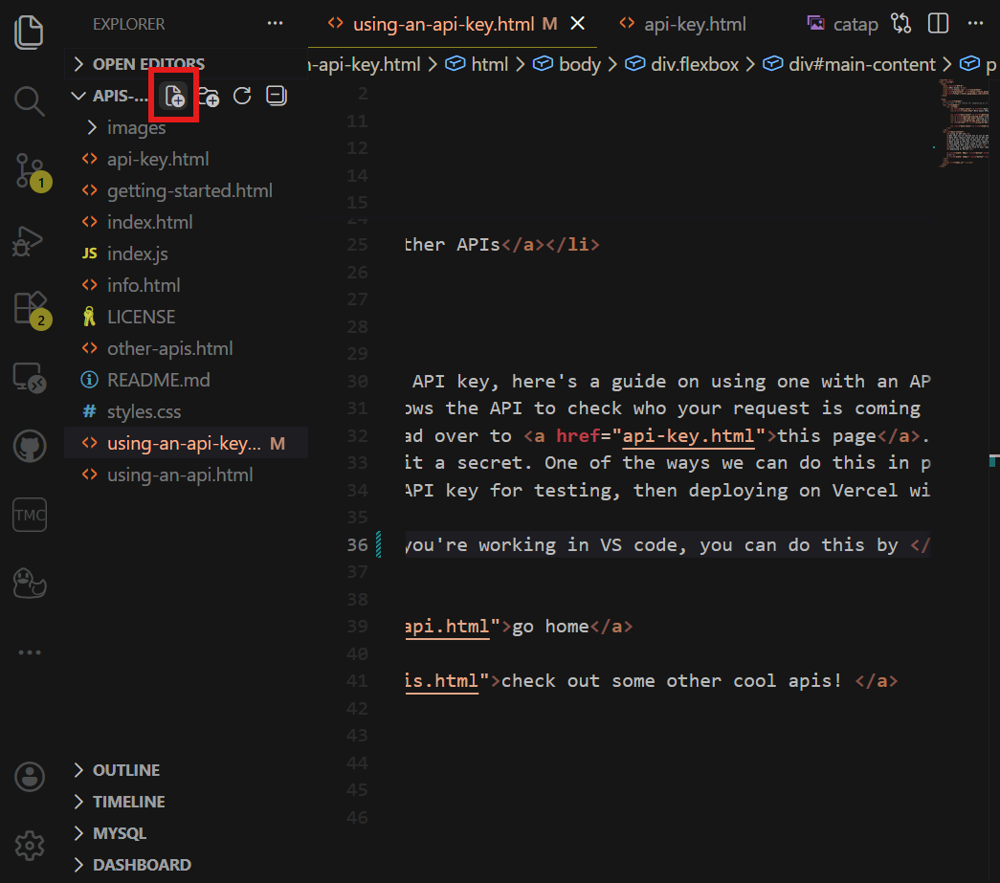
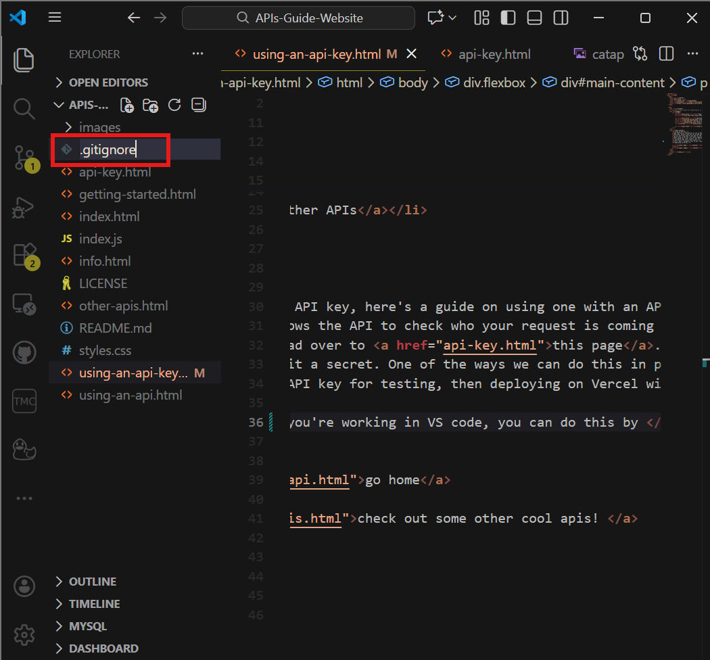
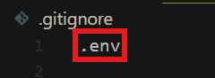
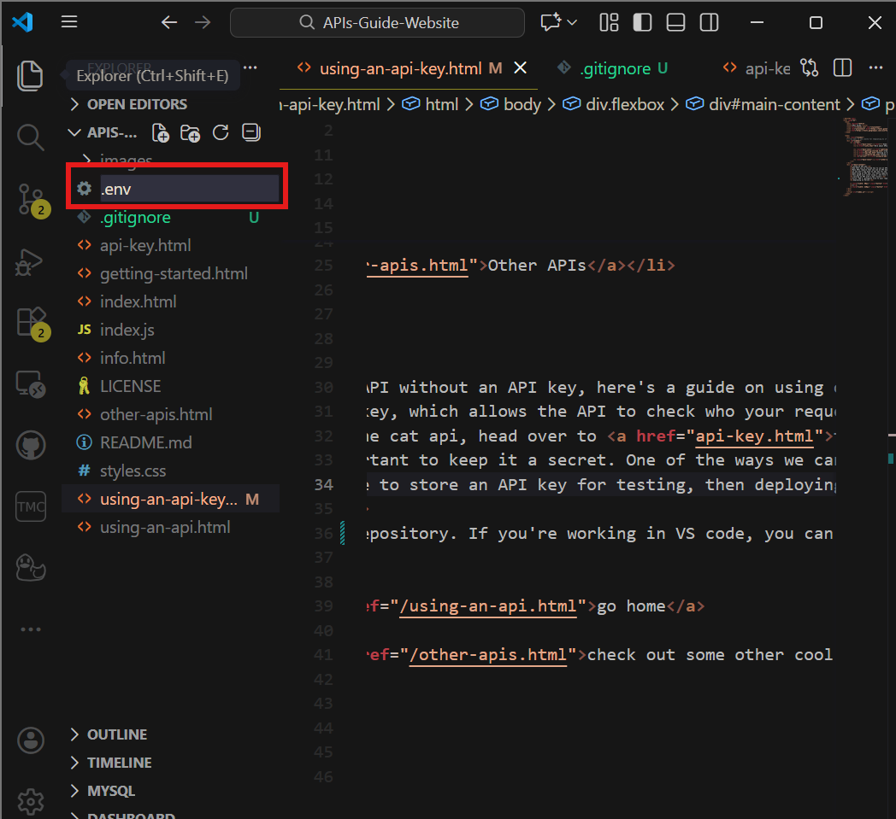
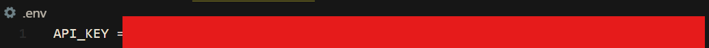

Using an API key (requires a framework)
Now that you've learned how to use an API without an API key, here's a guide on using one with an API key.
You can learn more about API keys here.
When using an API key, its really important to keep it a secret. One of the ways we can do this in public codebases (such as a public repository on GitHub) is use environmental variables (**this is only available with frameworks, not vanilla Javascript).
This guide will cover using a .env file to store an API key for testing, then deploying on Vercel with an API key as an environmental variable.
calling an API with a key
Locally (for building and testing)
Setting up a .env file and adding it to the .gitignore allows you to make your codebase public while keeping an API key private and stored locally on your device.
First, add a .gitignore file to your repository. If you're working in VS code, you can follow the guide below to create and modify each file. Please note that your file tree will look very different from mine, since you're in an Astro project.
 Then, add the filename ".env" to your .gitignore. This will tell git to ignore the file and not commit it to the repository, which allows it to stay local on your computer.
Now, create a .env file:
And add your API key to it. Do not include quotes around it! If you still have your API key from CatAPI in your email, that's great! If not, just copy it again from their email.
Note: your .env file should be in the root of your repository, along with the .gitignore.
Now, you can access this API key locally. Use the code below in your Javascript at the top of your file:
const api_key = import.meta.env.API_KEY
You can now use the API key just as you would any other variable!
Calling the API
Now that you've created a variable for your API key and know how to access it, here's how to call CatAPI using it.
One simple way to do this is to take the previous code (with the fetch statement and json conversion) and simply add "&api_key={your_api_key}" to the end.
Like before in vanilla JS, we'll be using fetch and .json() to get our data and convert it into a usable format. First, at the top of your file (between the two --- and beneath your API key variable declaration), add the below code. The ` will allow you to insert your api key variable directly into the url!
const catapi_raw_data = await fetch(
`https://api.thecatapi.com/v1/images/search?breed_ids=beng&api_key=${api_key}`
)
You can also call the API using a header for the API key, which is more common. You can implement it like this:
const catapi_raw_data = await fetch('https://api.thecatapi.com/v1/images/search?breed_ids=beng',{
headers: {
'x-api-key': api_key
}
})
Now, like before, we have to convert this request to a JSON format using .json().
const catapi_json = await catapi_raw_data.json()
Looking at the above URL, you can see that this request only searches for images of bengals! Please note that this functionality is also available without an API key, but I'm using it to demo how you may call an API which does require an API key.
The first argument (the breed) is separated from the URL by a ?, and following ones with &s. These arguments allow us to customize what the API gives us! Another you can experiment with is limit=#, which allows you to define the number of images the API will return. If you are returning multiple images, you will also have to change your code so that it displays more than one image!
Finally, in your code, you can add an image tag with an src defined by catapi_json[0].url
<img src={catapi_json[0].url}>
You may have to set the width so that it fits on your screen, but don't set both the width and the height otherwise it may distort the image! Alternatively, you can set the width and the height to the width and heights given by the api through .width and .height.
Finally, run your app locally with "npm run dev" and you should see a cat image on the webpage! If you re-start the server, another one will appear.